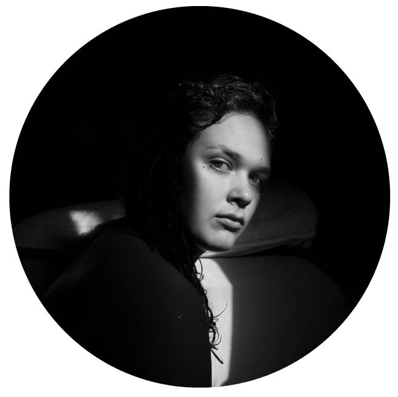

Hello,
my name is Kat Massey and i'm so glad that you clicked on my website!
I enjoy making all kinds of art including, but not limited to: photography, sculpture, mixed media, drawing, painting, and digital art.
I am currently going to San Jose State and working towards getting my Bachelors of Arts in Studio Practice.
I tend to look from my personal life and experiences for inspiration and I love trying out new styles.